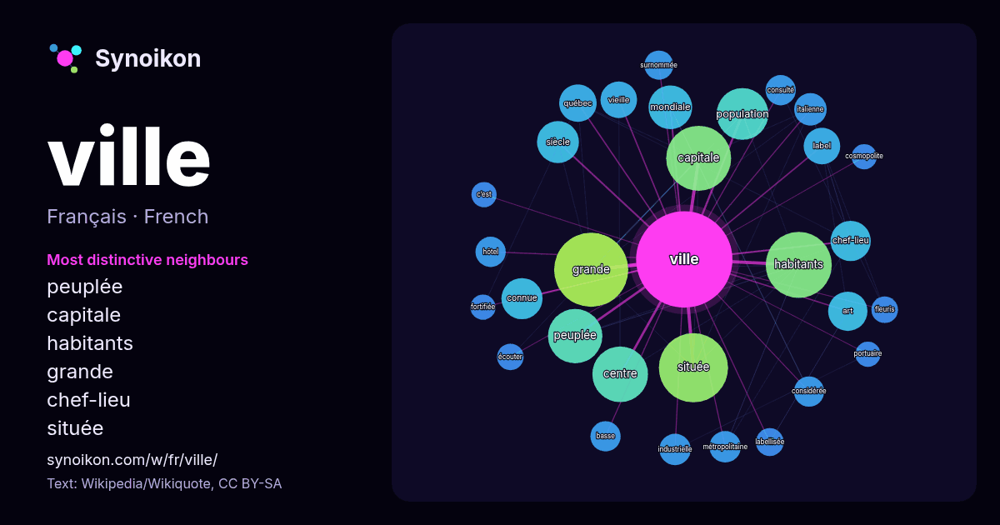

Français · liste des mots du jour
ville
“city” · Les mots trouvés autour de lui dans 1820 occurrences issues de Wikipédia, Wikiquote.

Voisins les plus spécifiques
- peuplée 39×
- capitale 30×
- habitants 22×
- grande 19×
- chef-lieu 18×
- située 17×
- vieille 17×
- art 15×
- connue 14×
- consulté 14×
- métropolitaine 13×
- siècle 13×
- label 13×
- centre 12×
- surnommée 12×
- labellisée 12×
- hôtel 11×
- italienne 11×
- industrielle 11×
- québec 11×
× = combien de fois plus souvent que dans le texte général de Wikipédia.
Voisins les plus fréquents
- grande 78
- située 68
- habitants 62
- capitale 60
- centre 44
- peuplée 42
- monde 38
- nom 38
- population 38
- également 37
- nord 34
- partie 32
- région 31
- compte 29
- france 29
- pays 29
- grandes 28
- mondiale 27
- paris 26
- siècle 25
En contexte
- administratifs et honorifiques ou toute autre signification, voir Ville (homonymie). Une ville est un lieu qui se caractérise par une forte densité de population Wikipedia snippets · Ville
- la ville la plus visitée au monde. La ville a également attiré 17,5 millions de visiteurs étrangers en 2018. Elle était en 2017 la sixième ville la plus Wikipedia snippets · Paris
- la plus grande ville de l'Autriche ; elle est aussi l'un des neuf Länder (État fédéré) du pays (en allemand : Bundesland Wien). La ville est située dans Wikipedia snippets · Vienne (Autriche)
- grandes villes de la Gaule avec Narbo Martius (Narbonne). La ville s'étale principalement sur quatre zones particulièrement délimitées : la ville haute Wikipedia snippets · Lyon
- son nom à la ville, Kébec étant un mot algonquin signifiant « là où le fleuve se rétrécit ». Les remparts font de Québec la seule ville fortifiée subsistant Wikipedia snippets · Québec (ville)
- grande ville du Québec. Grande métropole insulaire et portuaire du fleuve Saint-Laurent, au pied des rapides de Lachine, c'est la deuxième ville du Canada Wikipedia snippets · Montréal
- jours l'emblème de la ville. Considérablement agrandie par de grands travaux sous Jules César et surtout sous Auguste, la ville est partiellement détruite Wikipedia snippets · Rome
- de la ville de Paris, qui entre en vigueur au 1er janvier 2019, a introduit la notion de secteur qui complète celle d'arrondissement. La Ville de Paris Wikipedia snippets · Commune (France)
Autres mots
- art
- automne
- carte
- chanson
- chat
- chemin
- cheval
- chien
- climat
- cloche
- cœur
- dieu
- désert
- eau
- famille
- forêt
- histoire
- hiver
- horloge
- jardin
- langue
- miel
- miroir
- monnaie
- montagne
- mort
- mère
- nature
- nourriture
- ombre
- pain
- pluie
- pont
- pouvoir
- printemps
- santé
- science
- sel
- silence
- temps
- tempête
- thé
- train
- travail
- trésor
- vie
- vérité
- étoile
- île
Précalculé le 2026-10-09 avec les paramètres par défaut (±5 mots, corpus moyen). La carte interactive peut l’actualiser avec des données en direct.
Interface traduite automatiquement ; corrections bienvenues.